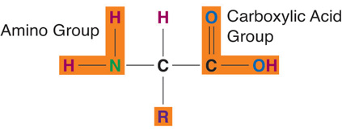
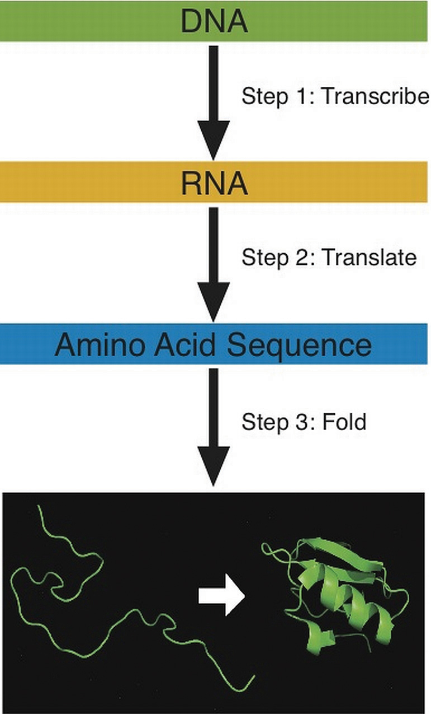
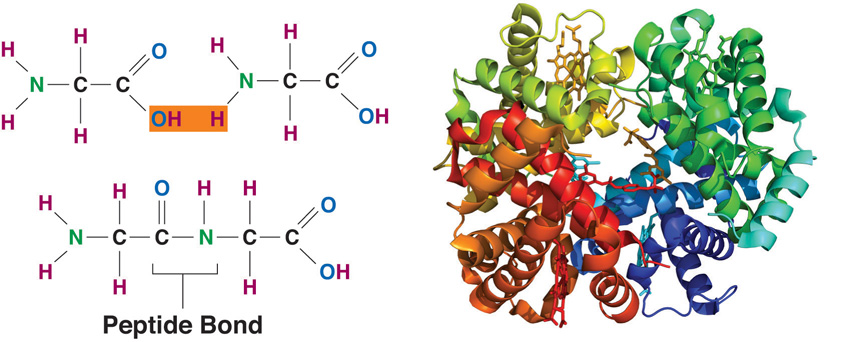
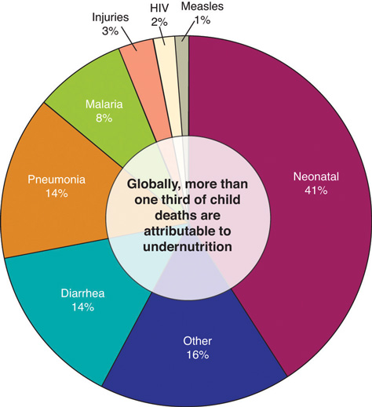
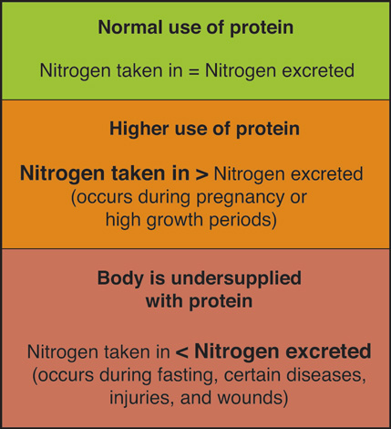

Protein is best used for vital body functions—eat just enough for your lifestyle needs.
Some dieters use protein bars as a prime part of their diet, with the hopes of slimming their waistlines. Exercise cafes serve protein shakes to many of their patrons, who drink them for building muscle and enhancing exercise recovery. Some people have stopped eating meat and feel the need to use protein supplements to ensure they are getting their required protein intake each day. After all, protein is a vital constituent of all organs in the body and is required to synthesize hormones, enzymes, and a variety of molecules. It is no wonder that so many people are preoccupied with optimizing their dietary protein intake. Dieters, athletes, physically active people, and vegetarians may worry that they lack protein in their diet, and that they need to consume more from protein bars, shakes, or supplements to perform better and optimize health. This chapter will help address these concerns. First, let us take a look at vegetarian diets.
There are different types of vegetarians, but a common theme is that vegetarians do not eat meat. Four common forms of vegetarianism are:
People choose a vegetarian diet for various reasons, including religious doctrines, health concerns, ecological and animal welfare concerns, or simply because they dislike the taste of meat. Vegetarianism has been practiced for centuries. In the fourth century BC, great thinkers such as Pythagoras and Plato promoted vegetarian diets in their natural philosophies. Ancient Olympians were placed on vegetarian diets one month prior to the Olympic Games.
Gladiators were tough men who fought violently against each other during games sponsored by the Roman Empire’s upper class political rulers. In 1993, archaeologists uncovered a gladiator burial ground not far from the Temple of Artemis. To their surprise, forensic analysis of the gladiators’ bones revealed that they consumed a vegetarian diet. This information matches other historical accounts that gladiators ate a diet rich in barley and dried fruits. Hulled barley is a very nutritious whole grain; it is a complete protein source, containing more than 20 grams of protein and all nine essential amino acids in a one-cup serving.
Although the great philosophers, ancient Olympic athletes, and Roman gladiators saw vegetarianism as a means of maintaining optimal health, it took a while for the vegetarian dietary pattern to catch on in America. In 1987, John Robbins wrote Diet for a New America and popularized the vegan diet first introduced by Jay Dinshah in the United States in 1960. In the early 1990s, Dr. John McDougall wrote a series of books that promoted vegan dietary regimens to ward off chronic disease. Also during the 1990s, scientific evidence accumulated that supported that diets consisting of too much red meat were linked to chronic disease. This prompted many health organizations, such as the Academy of Nutrition and Dietetics (AND) and the American Heart Association (AHA), to issue statements endorsing the health benefits of vegetarian diets. These statements can be read at http://www.eatright.org/about/content.aspx?id=8357 and http://bit.ly/O2VQkC.
The US federal government was unable to ignore the health benefits of plant-based diets any longer, and consequently released the 2010 Dietary Guidelines in which Americans were challenged to eat a more plant-based diet. Moreover, the Dietary Guidelines advisory committee stated, “In prospective studies of adults, compared to nonvegetarian eating patterns, vegetarian-style eating patterns have been associated with improved health outcomes—lower levels of obesity, a reduced risk of cardiovascular disease, and lower total mortality.”
What are the best sources of protein and how much protein do I need to eat to have a healthy diet?
Whether you choose to consume protein from animal- or plant-derived products, an important factor to consider is the entire nutrient package of the food. What other fats, nutrients, additives, or preservatives come with the protein source? Red meat is a popular choice for protein, but it contains high amounts of saturated fat. Fish is another good protein choice, and it provides much less saturated fat than other meats, in addition to more healthy fats. Some plant-based sources of protein contain high amounts of protein per serving with just under one gram of less desirable fat in addition to good amounts of healthy fats. As you read through this chapter you will learn how to choose the best protein sources to support your health.
Protein makes up approximately 20 percent of the human body and is present in every single cell. The word protein is a Greek word, meaning “of utmost importance.” Proteins are called the workhorses of life as they provide the body with structure and perform a vast array of functions. You can stand, walk, run, skate, swim, and more because of your protein-rich muscles. Protein is necessary for proper immune system function, digestion, and hair and nail growth, and is involved in numerous other body functions. In fact, it is estimated that more than one hundred thousand different proteins exist within the human body. In this chapter you will learn about the components of protein, the important roles that protein serves within the body, how the body uses protein, the risks and consequences associated with too much or too little protein, and where to find healthy sources of it in your diet.
ProteinsMacromolecules composed of monomeric subunits, called amino acids., simply put, are macromolecules composed of amino acids. Amino acidsSimple monomers composed of the elements carbon, oxygen, hydrogen, and nitrogen. are commonly called protein’s building blocks. Proteins are crucial for the nourishment, renewal, and continuance of life. Proteins contain the elements carbon, hydrogen, and oxygen just as carbohydrates and lipids do, but proteins are the only macronutrient that contains nitrogen. In each amino acid the elements are arranged into a specific conformation around a carbon center. Each amino acid consists of a central carbon atom connected to a side chain, a hydrogen, a nitrogen-containing amino group, a carboxylic acid group—hence the name “amino acid.” Amino acids differ from each other by which specific side chain is bonded to the carbon center.
Figure 6.1 Amino Acid Structure
Amino acids contain four elements. The arrangement of elements around the carbon center is the same for all amino acids. Only the side chain (R) differs.
The side chain of an amino acid, sometimes called the “R” group, can be as simple as one hydrogen bonded to the carbon center, or as complex as a six-carbon ring bonded to the carbon center. Although each side chain of the twenty amino acids is unique, there are some chemical likenesses among them. Therefore, they can be classified into four different groups (Figure 6.2). These are nonpolar, polar, acidic, and basic.
Figure 6.2

Amino acids are classified into four groups. These are nonpolar, polar, acidic, and basic.
Amino acids are further classified based on nutritional aspects. Recall that there are twenty different amino acids, and we require all of them to make the many different proteins found throughout the body (Table 6.1 "Essential and Nonessential Amino Acids"). Eleven of these are called nonessential amino acidsAmino acids that are made in the human body. because the body can synthesize them. However, nine of the amino acids are called essential amino acidsAmino acids that are not made by humans and must be obtained from the diet. because we cannot synthesize them either at all or in sufficient amounts. These must be obtained from the diet. Sometimes during infancy, growth, and in diseased states the body cannot synthesize enough of some of the nonessential amino acids and more of them are required in the diet. These types of amino acids are called conditionally essential amino acidsAmino acids that become essential during certain times in life, such as child growth.. The nutritional value of a protein is dependent on what amino acids it contains and in what quantities.
Table 6.1 Essential and Nonessential Amino Acids
| Essential | Nonessential |
|---|---|
| Histidine | Alanine |
| Isoleucine | Arginine* |
| Leucine | Asparagine |
| Lysine | Aspartic acid |
| Methionine | Cysteine* |
| Phenylalanine | Glutamic acid |
| Threonine | Glutamine* |
| Tryptophan | Glycine* |
| Valine | Proline* |
| Serine | |
| Tyrosine* | |
| *Conditionally essential | |
As discussed, there are over one hundred thousand different proteins in the human body. Different proteins are produced because there are twenty types of naturally occurring amino acids that are combined in unique sequences. Additionally, proteins come in many different sizes. The hormone insulin, which regulates blood glucose, is composed of only fifty-one amino acids; whereas collagen, a protein that acts like glue between cells, consists of more than one thousand amino acids. Titin is the largest known protein. It accounts for the elasticity of muscles, and consists of more than twenty-five thousand amino acids! The abundant variations of proteins are due to the unending number of amino acid sequences that can be formed. To compare how so many different proteins can be designed from only twenty amino acids, think about music. All of the music that exists in the world has been derived from a basic set of seven notes C, D, E, F, G, A, B and variations thereof. As a result, there is a vast array of music and songs all composed of specific sequences from these basic musical notes. Similarly, the twenty amino acids can be linked together in an extraordinary number of sequences, much more than are possible for the seven musical notes to create songs. As a result, there are enormous variations and potential amino acid sequences that can be created. For example, if an amino acid sequence for a protein is 104 amino acids long the possible combinations of amino acid sequences is equal to 20104, which is 2 followed by 135 zeros!
The building of a protein consists of a complex series of chemical reactions that can be summarized into three basic steps: transcriptionProcess of copying DNA into messenger RNA., translationProcess of decoding messenger RNA and synthesizing a protein., and protein foldingA sequence of amino acids transforms into its dictated shape. (Figure 6.3). The first step in constructing a protein is the transcription (copying) of the genetic information in double-stranded deoxyribonucleic acid (DNA) into the single-stranded, messenger macromolecule ribonucleic acid (RNA). RNA is chemically similar to DNA, but has two differences; one is that its backbone uses the sugar ribose and not deoxyribose; and two, it contains the nucleotide base uracil, and not thymidine. The RNA that is transcribed from a given piece of DNA contains the same information as that DNA, but it is now in a form that can be read by the cellular protein manufacturer known as the ribosome. Next, the RNA instructs the cells to gather all the necessary amino acids and add them to the growing protein chain in a very specific order. This process is referred to as translation. The decoding of genetic information to synthesize a protein is the central foundation of modern biology.
Figure 6.3
Building a protein involves three steps: transcription, translation, and folding.
During translation each amino acid is connected to the next amino acid by a special chemical bond called a peptide bondThe chemical bond that connects amino acids in a sequence. (Figure 6.4). The peptide bond forms between the carboxylic acid group of one amino acid and the amino group of another, releasing a molecule of water. The third step in protein production involves folding it into its correct shape. Specific amino acid sequences contain all the information necessary to spontaneously fold into a particular shape. A change in the amino acid sequence will cause a change in protein shape. Each protein in the human body differs in its amino acid sequence and consequently, its shape. The newly synthesized protein is structured to perform a particular function in a cell. A protein made with an incorrectly placed amino acid may not function properly and this can sometimes cause disease.
Figure 6.4
Connecting amino acids with peptide bonds builds proteins. In the process of translation, amino acids are sequentially strung along in a chain in a specific sequence that spontaneously folds into the correct protein shape.
Protein’s structure enables it to perform a variety of functions. Proteins are similar to carbohydrates and lipids in that they are polymers of simple repeating units; however, proteins are much more structurally complex. In contrast to carbohydrates, which have identical repeating units, proteins are made up of amino acids that are different from one another. Furthermore, a protein is organized into four different structural levels (Figure 6.5). The first level is the one-dimensional sequence of amino acids that are held together by peptide bonds. Carbohydrates and lipids also are one-dimensional sequences of their respective monomers, which may be branched, coiled, fibrous, or globular, but their conformation is much more random and is not organized by their sequence of monomers. In contrast, the two-dimensional level of protein structure is dependent on the chemical interactions between amino acids, which cause the protein to fold into a specific shape, such as a helix (like a coiled spring) or sheet. The third level of protein structure is three-dimensional. As the different side chains of amino acids chemically interact, they either repel or attract each other, resulting in the coiled structure. Thus, the specific sequence of amino acids in a protein directs the protein to fold into a specific, organized shape. The fourth level of structure (also known as its “quaternary” structure) is achieved when protein fragments called peptides combine to make one larger functional protein. The protein hemoglobin is an example of a protein that has quaternary structure. It is composed of four peptides that bond together to form a functional oxygen carrier. A protein’s structure also influences its nutritional quality. Large fibrous protein structures are more difficult to digest than smaller proteins and some, such as keratin, are indigestible. Because digestion of some fibrous proteins is incomplete, not all of the amino acids are absorbed and available for the body to utilize, thereby decreasing their nutritional value.
Figure 6.5

A protein has four different structural levels.
From DNA to Protein
(click to see video)See the process of building a protein in real time in this animation.
There are over four thousand diseases caused by incorrectly built protein. Find out more about how one incorrectly placed amino acid causes the disease sickle cell anemia by watching this animation.
In addition to having many vital functions within the body, proteins perform different roles in our foods by adding certain functional qualities to them. Protein provides food with structure and texture and enables water retention. For example, proteins foam when agitated. (Picture whisking egg whites to make angel food cake. The foam bubbles are what give the angel food cake its airy texture.) Yogurt is another good example of proteins providing texture. Milk proteins called caseins coagulate, increasing yogurt’s thickness. Cooked proteins add some color to foods as the amino group binds with carbohydrates and produces a brown pigment. Eggs are between 10 and 15 percent protein by weight. Most cake recipes use eggs because the egg proteins help bind all the other ingredients together into a uniform cake batter. The proteins aggregate into a network during mixing and baking that gives cake structure.
When a cake is baked, the proteins are denatured. DenaturationThe physical changes that take place in a protein when it is exposed to abnormal conditions in the environment. refers to the physical changes that take place in a protein exposed to abnormal conditions in the environment. Heat, acid, high salt concentrations, alcohol, and mechanical agitation can cause proteins to denature. When a protein denatures, its complicated folded structure unravels, and it becomes just a long strand of amino acids again. Weak chemical forces that hold tertiary and secondary protein structures together are broken when a protein is exposed to unnatural conditions. Because proteins’ function is dependent on their shape, denatured proteins are no longer functional. During cooking the applied heat causes proteins to vibrate. This destroys the weak bonds holding proteins in their complex shape (though this does not happen to the stronger peptide bonds). The unraveled protein strands then stick together, forming an aggregate (or network).

When a protein is exposed to a different environment, such as increased temperature, it unfolds into a single strand of amino acids.
Denaturing of Egg Proteins
View this animation of egg proteins denaturing.
http://www.sumanasinc.com/webcontent/animations/content/proteinstructure.html
Gelatin is a mixture of collagen proteins. How does gelatin add texture and structure to foods? Conduct an experiment by making some Jell-O™ using different methods of denaturation and discuss what happens to the texture and structure.
How do the proteins from foods, denatured or not, get processed into amino acids that cells can use to make new proteins? When you eat food the body’s digestive system breaks down the protein into the individual amino acids, which are absorbed and used by cells to build other proteins and a few other macromolecules, such as DNA. We discussed the process of food digestion in depth in Chapter 3 "Nutrition and the Human Body", but now let’s follow the specific path that proteins take down the gastrointestinal tract and into the circulatory system. Eggs are a good dietary source of protein and will be used as our example to describe the path of proteins in the processes of digestion and absorption. One egg, whether raw, hard-boiled, scrambled, or fried, supplies about six grams of protein.
Unless you are eating it raw, the first step in egg digestion (or any other protein food) involves chewing. The teeth begin the mechanical breakdown of the large egg pieces into smaller pieces that can be swallowed. The salivary glands provide some saliva to aid swallowing and the passage of the partially mashed egg through the esophagus. The mashed egg pieces enter the stomach through the esophageal sphincter. The stomach releases gastric juices containing hydrochloric acidSecreted by stomach cells; aids in the chemical breakdown of proteins. and the enzyme, pepsinAn enzyme secreted by stomach cells. It breaks the peptide bonds between amino acids, producing much shorter protein fragments., which initiate the breakdown of the protein. The acidity of the stomach facilitates the unfolding of the proteins that still retain part of their three-dimensional structure after cooking and helps break down the protein aggregates formed during cooking. Pepsin, which is secreted by the cells that line the stomach, dismantles the protein chains into smaller and smaller fragments. Egg proteins are large globular molecules and their chemical breakdown requires time and mixing. The powerful mechanical stomach contractions churn the partially digested protein into a more uniform mixture, which, you may recall from Chapter 3 "Nutrition and the Human Body", is called chyme. Protein digestion in the stomach takes a longer time than carbohydrate digestion, but a shorter time than fat digestion. Eating a high-protein meal increases the amount of time required to sufficiently break down the meal in the stomach. Food remains in the stomach longer, making you feel full longer.

Protein digestion requires the chemical actions of gastric juice and the mechanical actions of the stomach.
The stomach empties the chyme containing the broken down egg pieces into the small intestine, where the majority of protein digestion occurs. The pancreas secretes digestive juice that contains more enzymes that further break down the protein fragments. The two major pancreatic enzymes that digest proteins are chymotrypsin and trypsin. The cells that line the small intestine release additional enzymes that finally break apart the smaller protein fragments into the individual amino acids. The muscle contractions of the small intestine mix and propel the digested proteins to the absorption sites. In the lower parts of the small intestine, the amino acids are transported from the intestinal lumen through the intestinal cells to the blood. This movement of individual amino acids requires special transport proteins and the cellular energy molecule, adenosine triphosphate (ATP). Once the amino acids are in the blood, they are transported to the liver. As with other macronutrients, the liver is the checkpoint for amino acid distribution and any further breakdown of amino acids, which is very minimal. Recall that amino acids contain nitrogen, so further catabolism of amino acids releases nitrogen-containing ammonia. Because ammonia is toxic, the liver transforms it into urea, which is then transported to the kidney and excreted in the urine. Urea is a molecule that contains two nitrogens and is highly soluble in water. This makes it a good choice for transporting excess nitrogen out of the body. Because amino acids are building blocks that the body reserves in order to synthesize other proteins, more than 90 percent of the protein ingested does not get broken down further than the amino acid monomers.
Just as some plastics can be recycled to make new products, amino acids are recycled to make new proteins. All cells in the body continually break down proteins and build new ones, a process referred to as protein turnoverThe processes of continually breaking down proteins and building new ones.. Every day over 250 grams of protein in your body are dismantled and 250 grams of new protein are built. To form these new proteins, amino acids from food and those from protein destruction are placed into a “pool.” Though it is not a literal pool, when an amino acid is required to build another protein it can be acquired from the additional amino acids that exist within the body. Amino acids are used not only to build proteins, but also to build other biological molecules containing nitrogen, such as DNA and RNA, and to some extent to produce energy. It is critical to maintain amino acid levels within this cellular pool by consuming high-quality proteins in the diet, or the amino acids needed for building new proteins will be obtained by increasing protein destruction from other tissues within the body, especially muscle. This amino acid pool is less than one percent of total body-protein content. Thus, the body does not store protein as it does with carbohydrates (as glycogen in the muscles and liver) and lipids (as triglycerides in adipose tissue).

Amino acids in the cellular pool come from dietary protein and from the destruction of cellular proteins. The amino acids in this pool need to be replenished because amino acids are outsourced to make new proteins, energy, and other biological molecules.

Proteins come in all sizes and shapes.
Proteins are the “workhorses” of the body and participate in many bodily functions. As you may recall, proteins come in all sizes and shapes and each is specifically structured for its particular function.
More than one hundred different structural proteins have been discovered in the human body, but the most abundant by far is collagen, which makes up about 6 percent of total body weight. Collagen makes up 30 percent of bone tissue and comprises large amounts of tendons, ligaments, cartilage, skin, and muscle. CollagenThe most abundant protein in the human body. It is a strong fibrous rope that plays a role in structure, motion, protection, and tissue repair and regeneration. is a strong, fibrous protein made up of mostly glycine and proline amino acids. Within its quaternary structure three protein strands twist around each other like a rope and then these collagen ropes overlap with others. This highly ordered structure is even stronger than steel fibers of the same size. Collagen makes bones strong, but flexible. Collagen fibers in the skin’s dermis provide it with structure, and the accompanying elastinA fibrous protein that allows connective tissues, such as skin and tendons, to stretch back into their original shape. protein fibrils make it flexible. Pinch the skin on your hand and then let go; the collagen and elastin proteins in skin allow it to go back to its original shape. Smooth-muscle cells that secrete collagen and elastin proteins surround blood vessels, providing the vessels with structure and the ability to stretch back after blood is pumped through them. Another strong, fibrous protein is keratinA fibrous protein that provides skin, hair, and nails with structure., which is what skin, hair, and nails are made of.
The closely packed collagen fibrils in tendons and ligaments allow for synchronous mechanical movements of bones and muscle and the ability of these tissues to spring back after a movement is complete. Move your fingers and watch the synchrony of your knuckle movements. In order to move, muscles must contract. The contractile parts of muscles are the proteins actinA contractile protein in muscle cells. and myosinA contractile protein in muscle cells.. When these proteins are stimulated by a nerve impulse they slide across each other, causing a shortening of the muscle cell. Upon stimulation, multiple muscle cells shorten at the same time, resulting in muscle contraction (see Note 6.37 "Video 6.2").
Muscle Contraction: The Sliding Filament Model
(click to see video)Watch this video to see actin and myosin in action.
Although proteins are found in the greatest amounts in connective tissues such as bone, their most extraordinary function is as enzymes. EnzymesProteins that conduct a specific chemical reaction in order to transform substrates into a product. are proteins that conduct specific chemical reactions. An enzyme’s job is to provide a site for a chemical reaction and to lower the amount of energy and time it takes for that chemical reaction to happen (this is known as “catalysis”). On average, more than one hundred chemical reactions occur in cells every single second and most of them require enzymes. The liver alone contains over one thousand enzyme systems. Enzymes are specific and will use only particular substrates that fit into their active site, similar to the way a lock can be opened only with a specific key. Nearly every chemical reaction requires a specific enzyme. Fortunately, an enzyme can fulfill its role as a catalyst over and over again, although eventually it is destroyed and rebuilt. All bodily functions, including the breakdown of nutrients in the stomach and small intestine, the transformation of nutrients into molecules a cell can use, and building all macromolecules, including protein itself, involve enzymes.

Enzymes are proteins. An enzyme’s job is to provide a site for substances to chemically react and form a product, and decrease the amount of energy and time it takes for this to happen.
Proteins are responsible for hormone synthesis. Recall from Chapter 3 "Nutrition and the Human Body" that hormones are the chemical messages produced by the endocrine glands. When an endocrine gland is stimulated, it releases a hormone. The hormone is then transported in the blood to its target cell, where it communicates a message to initiate a specific reaction or cellular process. For instance, after you eat a meal, your blood glucose levels rise. In response to the increased blood glucose, the pancreas releases the hormone insulin. Insulin tells the cells of the body that glucose is available and to take it up from the blood and store it or use it for making energy or building macromolecules. A major function of hormones is to turn enzymes on and off, so some proteins can even regulate the actions of other proteins. While not all hormones are made from proteins, many of them are.
Proper protein intake enables the basic biological processes of the body to maintain the status quo in a changing environment. Fluid balance refers to maintaining the distribution of water in the body. If too much water in the blood suddenly moves into a tissue, the results are swelling and, potentially, cell death. Water always flows from an area of high concentration to one of a low concentration. As a result, water moves toward areas that have higher concentrations of other solutes, such as proteins and glucose. To keep the water evenly distributed between blood and cells, proteins continuously circulate at high concentrations in the blood. The most abundant protein in blood is the butterfly-shaped protein known as albuminA butterfly-shaped protein that plays a role in fluid balance, acid-base balance, and the transport of biological molecules.. Albumin’s presence in the blood makes the protein concentration in the blood similar to that in cells. Therefore, fluid exchange between the blood and cells is not in the extreme, but rather is minimized to preserve the status quo.
Protein is also essential in maintaining proper pH balance (the measure of how acidic or basic a substance is) in the blood. Blood pH is maintained between 7.35 and 7.45, which is slightly basic. Even a slight change in blood pH can affect body functions. Recall that acidic conditions can cause protein denaturation, which stops proteins from functioning. The body has several systems that hold the blood pH within the normal range to prevent this from happening. One of these is the circulating albumin. Albumin is slightly acidic, and because it is negatively charged it balances the many positively charged molecules, such as hydrogen protons (H+), calcium, potassium, and magnesium which are also circulating in the blood. Albumin acts as a buffer against abrupt changes in the concentrations of these molecules, thereby balancing blood pH and maintaining the status quo. The protein hemoglobin also participates in acid-base balance by binding hydrogen protons.
Albumin and hemoglobin also play a role in molecular transport. Albumin chemically binds to hormones, fatty acids, some vitamins, essential minerals, and drugs, and transports them throughout the circulatory system. Each red blood cell contains millions of hemoglobin molecules that bind oxygen in the lungs and transport it to all the tissues in the body. A cell’s plasma membrane is usually not permeable to large polar molecules, so to get the required nutrients and molecules into the cell many transport proteins exist in the cell membrane. Some of these proteins are channels that allow particular molecules to move in and out of cells. Others act as one-way taxis and require energy to function (Figure 6.6).
Earlier we discussed that the strong collagen fibers in skin provide it with structure and support. The skin’s dense network of collagen fibers also serves as a barricade against harmful substances. The immune system’s attack and destroy functions are dependent on enzymes and antibodies, which are also proteins. An enzyme called lysozymeA protein that is an enzyme that destroys bacteria. is secreted in the saliva and attacks the walls of bacteria, causing them to rupture. Certain proteins circulating in the blood can be directed to build a molecular knife that stabs the cellular membranes of foreign invaders. The antibodiesA protein that protects against unwanted intruders. secreted by the white blood cells survey the entire circulatory system looking for harmful bacteria and viruses to surround and destroy (see Note 6.43 "Video 6.4"). Antibodies also trigger other factors in the immune system to seek and destroy unwanted intruders.
Specific Immunity: Antibodies
(click to see video)Watch this to observe how antibodies protect against foreign intruders.
Proteins are involved in all aspects of wound healing, a process that takes place in three phases: inflammatory, proliferative, and remodeling. For example, if you were sewing and pricked your finger with a needle, your flesh would turn red and become inflamed. Within a few seconds bleeding would stop. The healing process begins with proteins such as bradykinin, which dilate blood vessels at the site of injury. An additional protein called fibrin helps to secure platelets that form a clot to stop the bleeding. Next, in the proliferative phase, cells move in and mend the injured tissue by installing newly made collagen fibers. The collagen fibers help pull the wound edges together. In the remodeling phase, more collagen is deposited, forming a scar. Scar tissue is only about 80 percent as functional as normal uninjured tissue. If a diet is insufficient in protein, the process of wound healing is markedly slowed.
While wound healing takes place only after an injury is sustained, a different process called tissue regeneration is ongoing in the body. The main difference between wound healing and tissue regeneration is in the process of regenerating an exact structural and functional copy of the lost tissue. Thus, old, dying tissue is not replaced with scar tissue but with brand new, fully functional tissue. Some cells (such as skin, hair, nails, and intestinal cells) have a very high rate of regeneration, while others, (such as heart-muscle cells and nerve cells) do not regenerate at any appreciable levels. Tissue regeneration is the creation of new cells (cell division), which requires many different proteins including enzymes that synthesize RNA and proteins, transport proteins, hormones, and collagen. In a hair follicle, cells divide and a hair grows in length. Hair growth averages 1 centimeter per month and fingernails about 1 centimeter every one hundred days. The cells lining the intestine regenerate every three to five days. Protein-inadequate diets impair tissue regeneration, causing many health problems including impairment of nutrient digestion and absorption and, most visibly, hair and nail growth.
Some of the amino acids in proteins can be disassembled and used to make energy. Only about 10 percent of dietary proteins are catabolized each day to make cellular energy. The liver is able to break down amino acids to the carbon skeleton, which can then be fed into the citric acid cycle. This is similar to the way that glucose is used to make ATP. If a person’s diet does not contain enough carbohydrates and fats their body will use more amino acids to make energy, which compromises the synthesis of new proteins and destroys muscle proteins. Alternatively, if a person’s diet contains more protein than the body needs, the extra amino acids will be broken down and transformed into fat.
As you may recall, moderation refers to having the proper amount of a nutrient—having neither too little nor too much. A healthy diet incorporates all nutrients in moderation. Low protein intake has several health consequences, and a severe lack of protein in the diet eventually causes death. Although severe protein deficiency is a rare occurrence in children and adults in the United States, it is estimated that more than half of the elderly in nursing homes are protein-deficient. The Acceptable Macronutrient Distribution Range (AMDR) for protein for adults is between 10 and 35 percent of kilocalories, which is a fairly wide range. The percent of protein in the diet that is associated with malnutrition and its health consequences is less than 10 percent, but this is often accompanied by deficiencies in calories and other micronutrients. There is some scientific evidence that shows that people with diets low in animal protein (< 8 percent of caloric intake), who get adequate protein from plant-based foods instead, may actually have improved health and increased longevity. On the other hand, diets rich in animal-derived protein (> 30 percent of caloric intake) are associated with increased early mortality, kidney and liver malfunction, cardiovascular disease, colon cancer, and osteoporosis. In this section we will discuss the health consequences of protein intake that is either too low to support life’s processes or too high, thereby increasing the risk of chronic disease. In the last section of this chapter, we will discuss in more detail the personal choices you can make to optimize your health by consuming the right amount of high-quality protein.
Although severe protein deficiency is rare in the developed world, it is a leading cause of death in children in many poor, underdeveloped countries. There are two main syndromes associated with protein deficiencies: Kwashiorkor and Marasmus. KwashiorkorA syndrome of severe protein and micronutrient deficiency, characterized by swelling (edema) of the feet and abdomen, poor skin health, growth retardation, low muscle mass, and liver malfunction. affects millions of children worldwide. When it was first described in 1935, more than 90 percent of children with Kwashiorkor died. Although the associated mortality is slightly lower now, most children still die after the initiation of treatment. The name Kwashiorkor comes from a language in Ghana and means, “rejected one.” The syndrome was named because it occured most commonly in children who had recently been weaned from the breast, usually because another child had just been born. Subsequently the child was fed watery porridge made from low-protein grains, which accounts for the low protein intake. Kwashiorkor is characterized by swelling (edema) of the feet and abdomen, poor skin health, growth retardation, low muscle mass, and liver malfunction. Recall that one of protein’s functional roles in the body is fluid balance. Diets extremely low in protein do not provide enough amino acids for the synthesis of albumin. One of the functions of albumin is to hold water in the blood vessels, so having lower concentrations of blood albumin results in water moving out of the blood vessels and into tissues, causing swelling. The primary symptoms of Kwashiorkor include not only swelling, but also diarrhea, fatigue, peeling skin, and irritability. Severe protein deficiency in addition to other micronutrient deficiencies, such as folate (vitamin B9), iodine, iron, and vitamin C all contribute to the many health manifestations of this syndrome.

Kwashiorkor is a disease brought on by a severe dietary protein deficiency. Symptoms include edema of legs and feet, light-colored, thinning hair, anemia, a pot-belly, and shiny skin.
Source: Photo courtesy of the Centers for Disease Control and Prevention.
Children and adults with marasmusA syndrome of severe protein and energy deficiency, characterized by emaciation, poor skin health, and growth retardation. neither have enough protein in their diets nor do they take in enough calories. Marasmus affects mostly children below the age of one in poor countries. Body weights of children with Marasmus may be up to 80 percent less than that of a normal child of the same age. Marasmus is a Greek word, meaning “starvation.” The syndrome affects more than fifty million children under age five worldwide. It is characterized by an extreme emaciated appearance, poor skin health, and growth retardation. The symptoms are acute fatigue, hunger, and diarrhea.
Kwashiorkor and marasmus often coexist as a combined syndrome termed marasmic kwashiorkorThe combined syndrome of severe protein and energy deficiency, characterized by variable edema, emaciation, poor skin health, and growth retardation.. Children with the combined syndrome have variable amounts of edema and the characterizations and symptoms of marasmus. Although organ system function is compromised by undernutrition, the ultimate cause of death is usually infection. Undernutrition is intricately linked with suppression of the immune system at multiple levels, so undernourished children commonly die from severe diarrhea and/or pneumonia resulting from bacterial or viral infection (Figure 6.7). The United Nations Children’s Fund (UNICEF), the most prominent agency with the mission of changing the world to improve children’s lives, reports that undernutrition causes at least one-third of deaths of young children. As of 2008, the prevalence of children under age five who were underweight was 26 percent. The percentage of underweight children has declined less than 5 percent in the last eighteen years despite the Millenium Development Goal of halving the proportion of people who suffer from hunger by the year 2015.
Figure 6.7
Causes of death for children under the age of five, worldwide.
If you are interested in finding out more about world hunger and what is being done about it, visit the UNICEF website.
An explicit definition of a high-protein diet has not yet been developed by the Food and Nutrition Board of the Institute of Medicine (IOM), but typically diets high in protein are considered as those that derive more than 30 percent of calories from protein. Many people follow high-protein diets because marketers tout protein’s ability to stimulate weight loss. It is true that following high-protein diets increases weight loss in some people. However the number of individuals that remain on this type of diet is low and many people who try the diet and stop regain the weight they had lost. Additionally, there is a scientific hypothesis that there may be health consequences of remaining on high-protein diets for the long-term, but clinical trials are ongoing or scheduled to examine this hypothesis further. As the high-protein diet trend arose so did the intensely debated issue of whether there are any health consequences of eating too much protein. Observational studies conducted in the general population suggest diets high in animal protein, specifically those in which the primary protein source is red meat, are linked to a higher risk for kidney stones, kidney disease, liver malfunction, colorectal cancer, and osteoporosis. However, diets that include lots of red meat are also high in saturated fat and cholesterol and sometimes linked to unhealthy lifestyles, so it is difficult to conclude that the high protein content is the culprit.
High protein diets appear to only increase the progression of kidney disease and liver malfunction in people who already have kidney or liver malfunction, and not to cause these problems. However, the prevalence of kidney disorders is relatively high and underdiagnosed. In regard to colon cancer, an assessment of more than ten studies performed around the world published in the June 2011 issue of PLoS purports that a high intake of red meat and processed meat is associated with a significant increase in colon cancer risk.Chan, D. S., et al. “Red and Processed Meat and Colorectal Cancer Incidence: Meta-Analysis of Prospective Studies.” PLoS One 6, no. 6 (2011): e20456. doi: 10.1371/journal.pone.0020456. Although there are a few ideas, the exact mechanism of how proteins, specifically those in red and processed meats, causes colon cancer is not known and requires further study.
Some scientists hypothesize that high-protein diets may accelerate bone-tissue loss because under some conditions the acids in protein block absorption of calcium in the gut, and, once in the blood, amino acids promote calcium loss from bone; however even these effects have not been consistently observed in scientific studies. Results from the Nurse’s Health Study suggest that women who eat more than 95 grams of protein each day have a 20 percent higher risk for wrist fracture.Harvard School of Public Health. “Protein: The Bottom Line.” The Nutrition Source. © 2012 The President and Fellows of Harvard University. http://www.hsph.harvard.edu/nutritionsource/what-should-you-eat/protein/., Barzel, U. S. and L. K. Massey. “Excess Dietary Protein Can Adversely Affect Bone.” J Nutr 128, no. 6 (June 1, 1998): 1051–53. http://jn.nutrition.org/content/128/6/1051.long. Other studies have not produced consistent results. The scientific data on high protein diets and increased risk for osteoporosis remains highly controversial and more research is needed to come to any conclusions about the association between the two.St. Jeor, S. T. et al. “Dietary Protein and Weight Reduction: A Statement for Healthcare Professionals from the Nutrition Committee of the Council on Nutrition, Physical Activity, and Metabolism of the American Heart Association.” Circulation 104 (2001): 1869–74.
High-protein diets can restrict other essential nutrients. The AHA states that “High-protein diets are not recommended because they restrict healthful foods that provide essential nutrients and do not provide the variety of foods needed to adequately meet nutritional needs. Individuals who follow these diets are therefore at risk for compromised vitamin and mineral intake, as well as potential cardiac, renal, bone, and liver abnormalities overall.”St. Jeor, S. T. et al. “Dietary Protein and Weight Reduction: A Statement for Healthcare Professionals from the Nutrition Committee of the Council on Nutrition, Physical Activity, and Metabolism of the American Heart Association.” Circulation 104 (2001): 1869–74.
As with any nutrient, protein must be eaten in proper amounts. Moderation and variety are key strategies to achieving a healthy diet and need to be considered when optimizing protein intake. While the scientific community continues its debate about the particulars regarding the health consequences of too much protein in the diet, you may be wondering just how much protein you should consume to be healthy. Read on to find out more about calculating your dietary protein recommendations, dietary protein sources, and personal choices about protein.
We have discussed what proteins are, how they are made, how they are digested and absorbed, the many functions of proteins in the body, and the consequences of having too little or too much protein in the diet. This section will provide you with information on how to determine the recommended amount of protein for you, and your many choices in designing an optimal diet with high-quality protein sources.
The recommendations set by the IOM for the Recommended Daily Allowance (RDA) and AMDR for protein for different age groups are listed in Table 6.2 "Dietary Reference Intakes for Protein". A Tolerable Upper Intake Limit for protein has not been set, but it is recommended that you not exceed the upper end of the AMDR.
Table 6.2 Dietary Reference Intakes for Protein
| Age Group | RDA (g/day) | AMDR (% calories) |
|---|---|---|
| Infants (0–6 mo) | 9.1* | Not determined |
| Infants (7–12 mo) | 11.0 | Not determined |
| Children (1–3) | 13.0 | 5–20 |
| Children (4–8) | 19.0 | 10–30 |
| Children (9–13) | 34.0 | 10–30 |
| Males (14–18) | 52.0 | 10–30 |
| Females (14–18) | 46.0 | 10–30 |
| Adult Males (19+) | 56.0 | 10–35 |
| Adult Females (19+) | 46.0 | 10–35 |
| * Denotes Adequate Intake | ||
Source: Institute of Medicine. “Dietary Reference Intakes: Macronutrients.” Dietary Reference Intakes for Energy, Carbohydrate, Fiber, Fat, Fatty Acids, Cholesterol, Protein, and Amino Acids. September 5, 2002.
The appropriate amount of protein in a person’s diet is that which maintains a balance between what is taken in and what is used. The RDAs for protein were determined by assessing nitrogen balanceWhen the amount of protein input into the body equals the amount used up and excreted.. Nitrogen is one of the four basic elements contained in all amino acids. When proteins are broken down and amino acids are catabolized, nitrogen is released. Remember that when the liver breaks down amino acids, it produces ammonia, which is rapidly converted to nontoxic, nitrogen-containing urea, which is then transported to the kidneys for excretion. Most nitrogen is lost as urea in the urine, but urea is also excreted in the feces. Proteins are also lost in sweat and as hair and nails grow. The RDA, therefore, is the amount of protein a person should consume in their diet to balance the amount of protein used up and lost from the body. For healthy adults, this amount of protein was determined to be 0.8 grams of protein per kilogram of body weight. You can calculate your exact recommended protein intake per day based on your weight by using the following equation:
(Weight in lbs. ÷ 2.2 kg/lb) × 0.8 g/kgNote that if a person is overweight, the amount of dietary protein recommended can be overestimated.
The IOM used data from multiple studies that determined nitrogen balance in people of different age groups to calculate the RDA for protein. A person is said to be in nitrogen balance when the nitrogen input equals the amount of nitrogen used and excreted. A person is in negative nitrogen balance when the amount of excreted nitrogen is greater than that consumed, meaning that the body is breaking down more protein to meet its demands. This state of imbalance can occur in people who have certain diseases, such as cancer or muscular dystrophy. Someone who has a low-protein diet may also be in negative nitrogen balance as they are taking in less protein than what they actually need. Positive nitrogen balance occurs when a person excretes less nitrogen than what is taken in by the diet, such as during child growth or pregnancy. At these times the body requires more protein to build new tissues, so more of what gets consumed gets used up and less nitrogen is excreted. A person healing from a severe wound may also be in positive nitrogen balance because protein is being used up to repair tissues.
Figure 6.8 Nitrogen Balance
The protein food group consists of foods made from meat, seafood, poultry, eggs, soy, beans, peas, and seeds. According to the Harvard School of Public Health, “animal protein and vegetable protein probably have the same effects on health. It’s the protein package that’s likely to make a difference.”Harvard School of Public Health. “Protein: The Bottom Line.” The Nutrition Source. © 2012 The President and Fellows of Harvard University. http://www.hsph.harvard.edu/nutritionsource/what-should-you-eat/protein/. Simply put, different protein sources differ in their additional components, so it is necessary to pay attention to the whole nutrient “package.” Protein-rich animal-based foods commonly have high amounts of B vitamins, vitamin E, iron, magnesium, and zinc. Seafood often contains healthy fats, and plant sources of protein contain a high amount of fiber. Some animal-based protein-rich foods have an unhealthy amount of saturated fat and cholesterol. When choosing your dietary sources of protein, take note of the other nutrients and also the nonnutrients, such as cholesterol, dyes, and preservatives, in order to make good selections that will benefit your health. For instance, a hamburger patty made from 80 percent lean meat contains 22 grams of protein, 5.7 grams of saturated fat, and 77 milligrams of cholesterol. A burger made from 95 percent lean meat also contains 22 grams of protein, but has 2.3 grams of saturated fat and 60 milligrams of cholesterol. A cup of boiled soybeans contains 29 grams of protein, 2.2 grams of saturated fat, and no cholesterol. For more comparisons of protein-rich foods, see Table 6.3 "Sources of Dietary Protein". To find out the complete nutrient package of different foods, visit the US Department of Agriculture (USDA) website listed in Note 6.55 "Interactive 6.3".
Table 6.3 Sources of Dietary Protein
| Food | Protein Content (g) | Saturated Fat (g) | Cholesterol (mg) | Calories |
|---|---|---|---|---|
| Hamburger patty 3 oz. (80% lean) | 22.0 | 5.7 | 77 | 230 |
| Hamburger patty 3 oz. (95% lean) | 22.0 | 2.3 | 60 | 139 |
| Top sirloin 3 oz. | 25.8 | 2.0 | 76 | 158 |
| Beef chuck 3 oz. (lean, trimmed) | 22.2 | 1.8 | 51 | 135 |
| Pork loin 3 oz. | 24.3 | 3.0 | 69 | 178 |
| Pork ribs (country style, 1 piece) | 56.4 | 22.2 | 222 | 790 |
| Chicken breast (roasted, 1 c.) | 43.4 | 1.4 | 119 | 231 |
| Chicken thigh (roasted, 1 thigh) | 13.5 | 1.6 | 49 | 109 |
| Chicken leg (roasted, 1 leg) | 29.6 | 4.2 | 105 | 264 |
| Salmon 3 oz. | 18.8 | 2.1 | 54 | 175 |
| Tilapia 3 oz. | 22.2 | 0.8 | 48 | 109 |
| Halibut 3 oz. | 22.7 | 0.4 | 35 | 119 |
| Shrimp 3 oz. | 17.8 | 0.2 | 166 | 84 |
| Shrimp (breaded, fried, 6–8 pcs.) | 18.9 | 5.4 | 200 | 454 |
| Tuna 3 oz. (canned) | 21.7 | 0.2 | 26 | 99 |
| Soybeans 1 c. (boiled) | 29.0 | 2.2 | 0 | 298 |
| Lentils 1 c. (boiled) | 17.9 | 0.1 | 0 | 226 |
| Kidney beans 1 c. (canned) | 13.5 | 0.2 | 0 | 215 |
| Sunflower seeds 1 c. | 9.6 | 2.0 | 0 | 269 |
This interactive USDA tool allows you to enter the foods you eat (with serving size) and find out the whole nutrient package.
The USDA provides some tips for choosing your dietary protein sources. Their motto is, “Go Lean with Protein” (see Note 6.56 "Interactive 6.4"). The overall suggestion is to eat a variety of protein-rich foods to benefit health. The USDA recommends lean meats, such as round steaks, top sirloin, extra lean ground beef, pork loin, and skinless chicken. Additionally, a person should consume 8 ounces of cooked seafood every week (typically as two 4-ounce servings) to assure they are getting the healthy omega-3 fatty acids that have been linked to a lower risk for heart disease. Another tip is choosing to eat beans, peas, or soy products as a main dish. Some of the menu choices include chili with kidney and pinto beans, hummus on pita bread, and black bean enchiladas. You could also enjoy nuts in a variety of ways. You can put them on a salad, in a stir-fry, or use them as a topping for steamed vegetables in place of meat or cheese. If you do not eat meat, the USDA has much more information on how to get all the protein you need from a plant-based diet. When choosing the best protein-rich foods to eat, pay attention to the whole nutrient package and remember to select from a variety of protein sources to get all the other essential micronutrients.
The USDA manages the website choosemyplate.gov. The site provides a lot of tips and information about protein-rich foods.
Try some new, healthy, protein-rich food recipes by visiting the Harvard School of Public Health website, http://hvrd.me/OJRkpV. You will find recipes for foods such as spicy lemongrass tofu with Asian basil, fish Creole, and spicy chicken kebabs.
While protein is contained in a wide variety of foods, it differs in quality. High-quality protein contains all the essential amino acids in the proportions needed by the human body. The amino acid profile of different foods is therefore one component of protein quality. Foods that contain some of the essential amino acids are called incomplete protein sourcesFoods that contain some of the essential amino acids., while those that contain all nine essential amino acids are called complete protein sourcesFoods that contain all nine of the essential amino acids., or high-quality protein sources. Foods that are complete protein sources include animal foods such as milk, cheese, eggs, fish, poultry, and meat, and a few plant foods, such as soy and quinoa (Figure 6.9 "Complete and Incomplete Protein Sources"). The only animal-based protein that is not complete is gelatin, which consists of the protein, collagen.
Most plant-based foods are deficient in at least one essential amino acid and therefore are incomplete protein sources. For example, grains are usually deficient in the amino acid lysine, and legumes do not contain methionine or tryptophan. Because grains and legumes are not deficient in the same amino acids they can complement each other in a diet. Incomplete protein foods are called complementary foodsA combination of foods that when consumed together (though not necessarily at the same time) contain all nine essential amino acids at adequate levels. because when consumed in tandem they contain all nine essential amino acids at adequate levels. Some examples of complementary protein foods are given in Table 6.4 "Complementing Protein Sources the Vegan Way". Complementary protein sources do not have to be consumed at the same time—as long as they are consumed within the same day, you will meet your protein needs.
Explore some ethnic grocery markets to find new high-protein foods for your diet and/or experiment with the much cheaper plant-based protein sources. See Table 6.4 "Complementing Protein Sources the Vegan Way" for complementing protein sources the vegan way.
Table 6.4 Complementing Protein Sources the Vegan Way
| Foods | Lacking Amino Acids | Complementary Food | Complementary Menu |
|---|---|---|---|
| Legumes | Methionine, tryptophan | Grains, nuts, and seeds | Hummus and whole-wheat pita |
| Grains | Lysine, isoleucine, threonine | Legumes | Cornbread and kidney bean chili |
| Nuts and seeds | Lysine, isoleucine | Legumes | Stir-fried tofu with cashews |
The second component of protein quality is digestibility, as not all protein sources are equally digested. In general, animal-based proteins are completely broken down during the process of digestion, whereas plant-based proteins are not. This is because some proteins are contained in the plant’s fibrous cell walls and these pass through the digestive tract unabsorbed by the body.
The PDCAAS is a method adopted by the US Food and Drug Administration (FDA) to determine a food’s protein quality. It is calculated using a formula that incorporates the total amount of amino acids in the food and the amount of protein in the food that is actually digested by humans. The food’s protein quality is then ranked against the foods highest in protein quality. Milk protein, egg whites, whey, and soy all have a ranking of one, the highest ranking. Other foods’ ranks are listed in Table 6.5 "PDCAAS of Various Foods".
Table 6.5 PDCAAS of Various Foods
| Food | PDCAAS* |
|---|---|
| Milk protein | 1.00 |
| Egg white | 1.00 |
| Whey | 1.00 |
| Soy protein | 1.00 |
| Beef | 0.92 |
| Soybeans | 0.91 |
| Chickpeas | 0.78 |
| Fruits | 0.76 |
| Vegetables | 0.73 |
| Legumes | 0.70 |
| Cereals | 0.59 |
| Whole wheat | 0.42 |
| *1 is the highest rank, 0 is the lowest | |
Some groups may need to examine how to meet their protein needs more closely than others. We will take a closer look at the special protein considerations for vegetarians, the elderly, and athletes.
People who follow variations of the vegetarian diet and consume eggs and/or dairy products can easily meet their protein requirements by consuming adequate amounts of these foods. Vegetarians and vegans can also attain their recommended protein intakes if they give a little more attention to high-quality plant-based protein sources. However, when following a vegetarian diet, the amino acid lysine can be challenging to acquire. Grains, nuts, and seeds are lysine-poor foods, but tofu, soy, quinoa, and pistachios are all good sources of lysine. Following a vegetarian diet and getting the recommended protein intake is also made a little more difficult because the digestibility of plant-based protein sources is lower than the digestibility of animal-based protein.
To begin planning a more plant-based diet, start by finding out which types of food you want to eat and in what amounts you should eat them to ensure that you get the protein you need. The Dietary Guidelines Advisory Committee (DGAC) has analyzed how three different, plant-based dietary patterns can meet the recommended dietary guidelines for all nutrients.Jacobs, D. R. et al. “Food, Plant Food, and Vegetarian Diets in the US Dietary Guidelines: Conclusions of an Expert Panel.” Am J Clin Nutr 89, no. 5 (2009). http://ajcn.nutrition.org/content/89/5/1549S.short. The diets are defined in the following manner:
These diets are analyzed and compared to the more common dietary pattern of Americans, which is referred to as the USDA Base Diet. Table 6.6 "Percentage of “Meat and Beans Group” Components in the USDA Base Diet, and Three Vegetarian Variations" and Table 6.7 "Proportions of Milk Products and Calcium-Fortified Soy Products in the Base USDA Patterns and Three Vegetarian Variations" can be used to help determine what percentage of certain foods to eat when following a different dietary pattern. The percentages of foods in the different groups are the proportions consumed by the population, so that, on average, Americans obtain 44.6 percent of their foods in the meat and beans group from meats. If you choose to follow a lacto-ovo vegetarian diet, the meats, poultry, and fish can be replaced by consuming a higher percentage of soy products, nuts, seeds, dry beans, and peas. As an aside, the DGAC notes that these dietary patterns may not exactly align with the typical diet patterns of people in the United States. However, they do say that they can be adapted as a guide to develop a more plant-based diet that does not significantly affect nutrient adequacy.
Table 6.6 Percentage of “Meat and Beans Group” Components in the USDA Base Diet, and Three Vegetarian Variations
| Food Category | Base USDA (%) | Plant-Based (%) | Lacto-Ovo Vegetarian (%) | Vegan (%) |
|---|---|---|---|---|
| Meats | 44.6 | 10.5 | 0 | 0 |
| Poultry | 27.9 | 8.0 | 0 | 0 |
| Fish (high omega-3) | 2.2 | 3.0 | 0 | 0 |
| Fish (low omega-3) | 7.1 | 10.0 | 0 | 0 |
| Eggs | 7.9 | 7.6 | 10.0 | 0 |
| Soy products | 0.9 | 15.0 | 30.0 | 25.0 |
| Nuts and seeds | 9.4 | 20.9 | 35.0 | 40.0 |
| Dry beans and peas | n/a* | 25.0 | 25.0 | 35.0 |
| Total | 100.0 | 100.0 | 100.0 | 100.0 |
| *The dry beans and peas are in the vegetable food group of the base diet. | ||||
Source: US Department of Agriculture. Appendix E-3.3, “Vegetarian Food Patterns: Food Pattern Modeling Analysis.” In 2010 Dietary Guidelines for Americans.
Table 6.7 Proportions of Milk Products and Calcium-Fortified Soy Products in the Base USDA Patterns and Three Vegetarian Variations
| Food Category | Base USDA (%) | Plant-based (%) | Lacto-ovo vegetarian (%) | Vegan (%) |
|---|---|---|---|---|
| Fluid milk | 54.6 | 54.6 | 54.6 | 0 |
| Yogurt | 1.6 | 1.6 | 1.6 | 0 |
| Cheese | 42.7 | 42.7 | 42.7 | 0 |
| Soy milk (w/ calcium) | 1.1 | 1.1 | 1.1 | 67.0 |
| Rice milk (w/ calcium) | 0 | 0 | 0 | 16.0 |
| Tofu (w/ calcium) | 0 | 0 | 0 | 15.0 |
| Soy yogurt | 0 | 0 | 0 | 2.0 |
| Total | 100.0 | 100.0 | 100.0 | 100.0 |
Source: US Department of Agriculture. Appendix E-3.3, “Vegetarian Food Patterns: Food Pattern Modeling Analysis.” In 2010 Dietary Guidelines for Americans. http://www.cnpp.usda.gov/Publications/DietaryGuidelines/2010/DGAC/Report/AppendixE-3-3-Vegetarian.pdf#xml=http://65.216.150 .153/texis/search/pdfhi.txt?query=vegetarian&pr=CNPP&prox=page&rorder=500&rprox=500&rdfreq=500&rwfreq=500&rlead=500&rdepth =0&sufs=2&order=r&cq=&id=4d9cfcc17.
From these analyses the DGAC concluded that the plant-based, lacto-ovo vegetarian, and vegan diets do not significantly affect nutrient adequacy. Additionally, the DGAC states that people who choose to obtain proteins solely from plants should include foods fortified with vitamins B12, D, and calcium. Other nutrients of concern may be omega-3 fatty acids and choline. Two large observational studies with thousands of participants demonstrated that in comparison to regular meat-eaters, people who followed a vegetarian diet had a significantly decreased risk of dying from heart disease or cancer.Lindbloom, E. “Long-Term Benefits of a Vegetarian Diet.” Am Fam Physician 79, no. 7 (April 1, 2009): 541–42. http://www.aafp.org/afp/2009/0401/p541.html.
To read the full report on nutrient adequacy of plant-based, lacto-ovo vegetarian, and vegan diets, go to the link to the Dietary Guidelines below, which takes you directly to appendix E-3.3. In addition to the information in Table 6.6 "Percentage of “Meat and Beans Group” Components in the USDA Base Diet, and Three Vegetarian Variations" and Table 6.7 "Proportions of Milk Products and Calcium-Fortified Soy Products in the Base USDA Patterns and Three Vegetarian Variations", this document provides details on the actual amounts in ounces and cups of various food groups required to eat each day in order to meet the dietary guidelines.
Make a sustainable choice to go meatless more than once a week. To get some ideas on how to expand your dietary choices, visit the Eating Well website, which has a twenty-eight-day vegetarian meal plan that meets the US dietary guidelines. http://www.eatingwell.com/nutrition_health/weight_loss_diet_plans/diet_meal_plans /vegetarian_meal_plan
As we age, muscle mass gradually declines. This is a process referred to as sarcopeniaThe age-related decline in muscle mass.. A person is sarcopenic when their amount of muscle tissue is significantly lower than the average value for a healthy person of the same age. A significantly lower muscle mass is associated with weakness, movement disorders, and a generally poor quality of life. It is estimated that about half the US population of men and women above the age of eighty are sarcopenic. A review published in the September 2010 issue of Clinical Intervention in Aging demonstrates that higher intakes (1.2 to 1.5 grams per kilogram of weight per day) of high-quality protein may prevent aging adults from becoming sarcopenic.Waters, D. L. et al. “Advantages of Dietary, Exercise-Related, and Therapeutic Interventions to Prevent and Treat Sarcopenia in Adult Patients: An Update.” Clin Interv Aging 5 (September 7, 2010): 259–70. http://www.ncbi.nlm.nih.gov/pmc/articles/PMC2938033/?tool=pubmed Currently, the RDA for protein for elderly persons is the same as that for the rest of the adult population, but several clinical trials are ongoing and are focused on determining the amount of protein in the diet that prevents the significant loss of muscle mass specifically in older adults.
Muscle tissue is rich in protein composition and has a very high turnover rate. During exercise, especially when it is performed for longer than two to three hours, muscle tissue is broken down and some of the amino acids are catabolized to fuel muscle contraction. To avert excessive borrowing of amino acids from muscle tissue to synthesize energy during prolonged exercise, protein needs to be obtained from the diet. Intense exercise, such as strength training, stresses muscle tissue so that afterward, the body adapts by building bigger, stronger, and healthier muscle tissue. The body requires protein postexercise to accomplish this. The IOM does not set different RDAs for protein intakes for athletes, but the AND, the American College of Sports Medicine, and Dietitians of Canada have the following position statements:
An endurance athlete who weighs 170 pounds should take in 93 to 108 grams of protein per day ((170 ÷ 2.2) × 1.2 and (170 ÷ 2.2) × 1.4). On a 3,000-kilocalorie diet, that amount is between 12 and 14 percent of total kilocalories and within the AMDR. There is general scientific agreement that endurance and strength athletes should consume protein from high-quality sources, such as dairy, eggs, lean meats, or soy; however eating an excessive amount of protein at one time does not further stimulate muscle-protein synthesis. Nutrition experts also recommend that athletes consume some protein within one hour after exercise to enhance muscle tissue repair during the recovery phase, but some carbohydrates and water should be consumed as well. The recommended ratio from nutrition experts for exercise-recovery foods is 4 grams of carbohydrates to 1 gram of protein.
Table 6.8 Snacks for Exercise Recovery
| Foods | Protein (g) | Carbohydrates (g) | Calories |
|---|---|---|---|
| Whole grain cereal with nonfat milk | 14 | 53 | 260 |
| Medium banana with nonfat milk | 10 | 39 | 191 |
| Power bar | 10 | 43 | 250 |
In response to hard training, a person’s body also adapts by becoming more efficient in metabolizing nutrient fuels both for energy production and building macromolecules. However, this raises another question: if athletes are more efficient at using protein, is it necessary to take in more protein from dietary sources than the average person? There are two scientific schools of thought on this matter. One side believes athletes need more protein and the other thinks the protein requirements of athletes are the same as for nonathletes. There is scientific evidence to support both sides of this debate. The consensus of both sides is that few people exercise at the intensity that makes this debate relevant. It is good to remember that the increased protein intake recommended by the AND, American College of Sports Medicine, and Dietitians of Canada still lies within the AMDR for protein.
Visit “Nutrition 101, Eating for Exercise and Sports.” This USDA site contains a wealth of nutritional information for active people.
Protein supplements include powders made from compounds such as whey or soy and amino acids that either come as a powder or in capsules. We have noted that the protein requirements for most people, even those that are active, is not high. Is taking protein supplements ever justified, then? Neither protein nor amino acid supplements have been scientifically proven to improve exercise performance or increase strength. In addition, the average American already consumes more protein than is required. Despite these facts, many highly physically active individuals use protein or amino acid supplements. According to the AND, American College of Sports Medicine, and Dietitians of Canada, “the current evidence indicates that protein and amino acid supplements are no more or no less effective than food when energy is adequate for gaining lean body mass.”American College of Sports Medicine, Academy of Nutrition and Dietetics, and Dietitians of Canada. “Joint Position Statement: Nutrition and Athletic Performance.” Med Sci Sports Exerc 41, no. 3 (March 2009). doi: 10.1249/MSS.0b013e31890eb86. Branched-chain amino acids, such as leucine, are often touted as a way to build muscle tissue and enhance athletic performance. Despite these marketing claims, a review in the June 2005 issue of The Journal of Nutrition shows that most studies that evaluated a variety of exercise types failed to show any performance-enhancing effects of taking branched-chain amino acids.Gleeson, M. “Interrelationship between Physical Activity and Branched-Chain Amino Acids.” J Nutr 135, no. 6, supplement (June 1, 2005): 1591S–5S. http://jn.nutrition.org/content/135/6/1591S.long. Moreover, the author of this review claims that high-quality protein foods are a better and cheaper source for branched-chain amino acids and says that a chicken breast (100 grams) contains the equivalent of seven times the amount of branched-chain amino acids as one supplement tablet. This means if you are interested in enhancing exercise performance or building muscle, you do not need to support the $20 billion supplement industry.
Although the evidence for protein and amino acid supplements impacting athletic performance is lacking, there is some scientific evidence that supports consuming high-quality dairy proteins, such as casein and whey, and soy proteins positively influences muscle recovery in response to hard training. If you choose to buy a bucket of whey protein, use it to make a protein shake after an intense workout and do not add more than what is required to obtain 20 to 25 grams of protein. As always, choosing high-quality protein foods will help you build muscle and not empty your wallet as much as buying supplements. Moreover, relying on supplements for extra protein instead of food will not provide you with any of the other essential nutrients. The bottom line is that whether you are an endurance athlete or strength athlete, or just someone who takes Zumba classes, there is very little need to put your money into commercially sold protein and amino acid supplements. The evidence to show that they are superior to regular food in enhancing exercise performance is not sufficient.
What about the numerous protein shakes and protein bars on the market? Are they a good source of dietary protein? Do they help you build muscle or lose weight as marketers claim? These are not such a bad idea for an endurance or strength athlete who has little time to fix a nutritious exercise-recovery snack. However, before you ingest any supplement, do your homework. Read the label, be selective, and don’t use them to replace meals, but rather as exercise-recovery snacks now and then. Some protein bars have a high amount of carbohydrates from added sugars and are not actually the best source for protein, especially if you are not an athlete. Protein bars are nutritionally designed to restore carbohydrates and protein after endurance or strength training; therefore they are not good meal replacements. If you want a low-cost alternative after an intense workout, make yourself a peanut butter sandwich on whole-grain bread and add some sliced banana for less than fifty cents. Supermarket and healthfood-store shelves offer an extraordinary number of high-protein shake mixes. While the carbohydrate count is lower now in some of these products than a few years ago, they still contain added fats and sugars. They also cost, on average, more than two dollars per can. If you want more nutritional bang for your buck, make your own shakes from whole foods. Use the AMDRs for macronutrients as a guide to fill up the blender. Your homemade shake can now replace some of the whole foods on your breakfast, lunch, or dinner plate. Unless you are an endurance or strength athlete and consume commercially sold protein bars and shakes only postexercise, these products are not a good dietary source of protein.
Proteins are long chains of amino acids folded into precise structures that determine their functions, which are in the tens of thousands. They are the primary construction materials of the body serving as building blocks for bone, skin, hair, muscle, hormones, and antibodies. Without them we cannot breakdown or build macromolecules, grow, or heal from a wound. Eat proteins in moderation, at least 10 percent of the calories you take in and not more than 35 percent. Too little protein impairs bodily functions and too much can lead to chronic disease. Proteins are in a variety of foods. More complete sources are in animal-based foods, but choose those low in saturated fat and cholesterol. Some plant-based foods are also complete protein sources and don’t add much to your saturated fat or cholesterol intake. Incomplete protein sources can easily be combined in the daily diet and provide all of the essential amino acids at adequate levels. Growing children and the elderly need to ensure they get enough protein in their diet to help build and maintain muscle strength. Even if you’re a hardcore athlete, get your proteins from nutrient-dense foods as you need more than just protein to power up for an event. Nuts are one nutrient-dense food with a whole lot of protein. One ounce of pistachios, which is about fifty nuts, has the same amount of protein as an egg and contains a lot of vitamins, minerals, healthy polyunsaturated fats, and antioxidants. Moreover, the FDA says that eating one ounce of nuts per day can lower your risk for heart disease. Can you be a hardcore athlete and a vegetarian? Many Olympians are vegetarians: figure skater Charlene Wong, sprinter Leroy Burrell, hurdler Edwin Moses, and Carl Lewis, who won ten medals (nine of them gold) in track and field. The analysis of vegetarian diets by the DGAC did not find that they were inadequate in any nutrients, but did state that people who obtain proteins solely from plants should make sure they consume foods with vitamin B12, vitamin D, calcium, omega-3 fatty acids, and choline. Iron and zinc may also be of concern especially for female athletes. Being a vegetarian athlete requires that you pay more attention to what you eat, however this is also a true statement for all athletes. For an exhaustive list that provides the protein, calcium, cholesterol, fat, and fiber content, as well as the number of calories, of numerous foods, go to the website, http://www.soystache.com/protein.htm.
Below are five ways to assure you are getting all the nutrients you need while working toward a more plant-based diet;